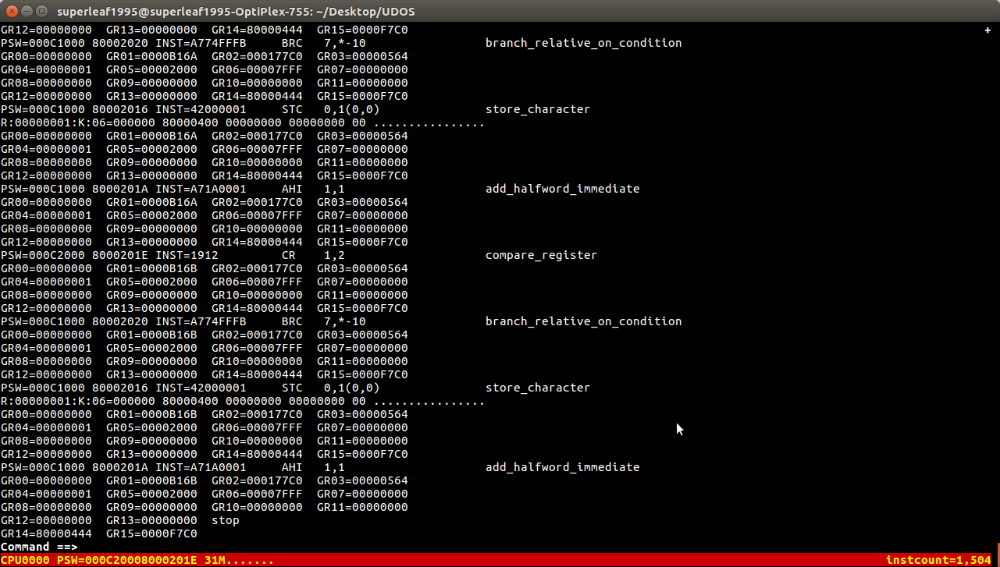

The IPL (Initial Program Loader) is responsible for loading the kernel from the media it was loaded on (commonly a DASD disk).
Code of the IPL can be found on the main repository, there are two versions, one is the ESA S/390 (31-bits) and the other is the Z/ARCH (64-bits). Please note that the z/Arch build must be compiled as if it was 31 bits. This also applies to the kernel itself.
There is an ongoing project to port the stivale protocol to ESA S/390 systems, this is called Flatboot. The goal is to allow kernel developers to not worry about the IPL and just do what matters.
